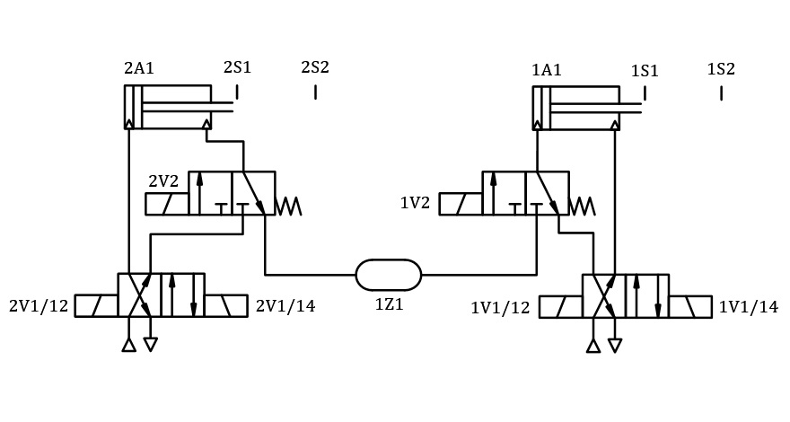
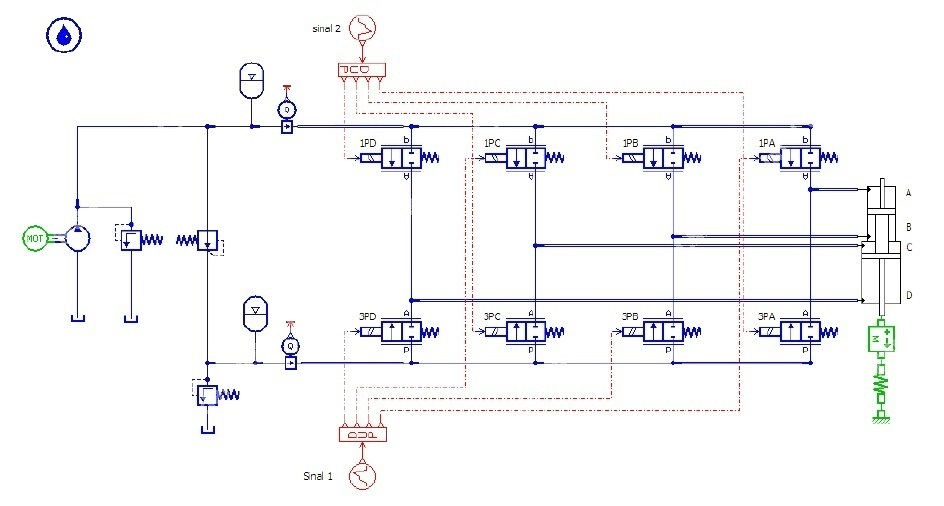
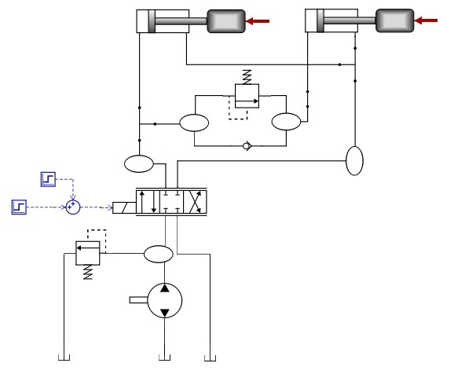

Projeto e manutenção
Sistemas Hidráulicos e Pneumáticos
Design and maintenance
Hydraulic and Pneumatic Systems (Fluid Power)
SOBRE
Mestre em Projetos de Sistemas Mecânicos
Área: Sistemas Hidráulicos e Pneumáticos
Experiência em projetos no setor industrial
Profissional habilitado (CREA-SC)
Mestre em Projetos de Sistemas Mecânicos
Área: Sistemas Hidráulicos e Pneumáticos
Experiência em projetos no setor industrial
Profissional habilitado (CREA-SC)
ABOUT ME
Master in Mechanical System Design
Hydraulic and Pneumatic Systems
Experience in projects in the industral sector
Qualified professional (CREA-SC)
Master in Mechanical System Design
Hydraulic and Pneumatic Systems
Experience in projects in the industral sector
Qualified professional (CREA-SC)
MISSÃO
Auxiliar os clientes na resolução de problemas de forma técnica e descomplicada.
Auxiliar os clientes na resolução de problemas de forma técnica e descomplicada.
MISSION
Assist customers in solving problems in a technical and efficient way.
Assist customers in solving problems in a technical and efficient way.
ÁREAS DE ATUAÇÃO
Projeto em engenharia
Projeto de máquinas
Hidráulica e pneumática
Planejamento da manutenção
Projeto em engenharia
Projeto de máquinas
Hidráulica e pneumática
Planejamento da manutenção
AREAS OF EXPERTISE
Design in Engineering
Machine design
Hidraulics and pneumatics
Maintenance planning
Design in Engineering
Machine design
Hidraulics and pneumatics
Maintenance planning
Projeto em Engenharia
Design in Engineering
Metodologias e práticas para o desenvolvimento do produto
Methodologies and practices for product development
A condução de projetos baseado em metodologias e sistematização dos processos
assegura maior potencial de sucesso no desenvolvimento de novos produto.
Conducting projects based on methodologies and systematization of processes
ensures greater potential for success in new product development.
- Aplicação de metodologia no desenvolvimento de novos produtos
- Condução de reuniões estratégicas para o planejamento do projeto
- Levantamento e classificação das especificações de projeto
- Uso de ferramentas para o projeto conceitual (árvore de funções e meios, matriz morfológica)
- Uso de modelos analíticos ou simulação computacional para avaliação dos conceitos gerados
- Especificação das fases do projeto (entradas, atividades, ferramentas e entregas esperadas)
- Elaboração e acompanhamento do cronograma de projeto
- Application of methodology for new product development
- Conducting strategic meetings for project planning
- Project requirements survey and classification
- Use of tools for conceptual design (function-means tree, morphological matrix)
- Use of analytical models or computer simulation to evaluate new concepts
- Project phases specification (inputs, activities, tools and expected deliverables)
- Project schedule elaboration and monitoring
Projeto de Máquinas
Machine Design
Cálculo, desenho e especificações para fabricação
Calculation, drawing and specifications for production
Para a criação de máquinas que realizem determinadas funções é necessário
o uso de ferramentas de projetos adequadas desde a concepção até o detalahamento para fabricação.
In order to create machines that perform certain functions, it is necessary to
use proper design tools from conception to technical production specifications.
- Modelagem 3D de componentes e sistemas
- Análise de tensões em componetes críticos
- Cálculos analíticos de máquinas e estruturas
- Especificação de tolerâncias geométricas e dimensionais
- Seleção de material
- Especificação de transmissões mecânicas e máquinas rotativas
- Seleção de elementos de máquinas
- Uso e adequação de padrões internacionais
- Interface com o setor de fabricação
- 3D Modeling of components and systems
- Stress analysis in critical components
- Analytical calculation of machines and structures
- Dimensional and geometric product specifications
- Material selection
- Specification of mechanical transmissions and rotating machines
- Machine elements selection
- Use and adequacy of international standards
- Interface with the manufacturing sector
Hidráuica e Pneumática
Hydraulics and Pneumatics
Serviços e documentação técnica de acordo com a sua necessidade
Services and technical documentation according to your need
Em dúvida sobre o sistema de controle hidráulico ou pneumático mais adequado para a sua aplicação?
Entre em contato para mais informações sobre esse ou outros serviços.
In doubt about the most suitable hydraulic or pneumatic control system for your application?
Get in touch for more information on this or others services.
- Especificação técnica de componentes (unidades de potência, cilindros, válvulas, mangueiras, conexões)
- Melhoria de projetos existentes do ponto de vista energético e operacional
- Automação de processos usando acionamentos elétricos
- Elaboração de manuais de operação de máquinas
- Avaliação de eficiência energética
- Modelagem e simulação dinâmica de sistemas
- Suporte técnico para instalações
- Identificação de problemas
- Implementação de lógicas de acionamentos em CLP
- Seleção de sensores e transdutores
- Component technical specifications (power units, cylinders, valves, hoses, connectors)
- Improvement of existing projects in terms of energy consumption and operability
- Process automation using electric commands
- Elaboration of machine operation manuals
- Energy efficiency asssessment
- Modelling and simulation of dynamic systems
- Assembly technical support
- Systems troubleshooting
- PLC programming implementation
- Selection of sensors and transducers
Planejamento da Manutenção
Maintenance Planning
Implementação de manutenção eficiente para plantas industriais
Implementation of efficient maintenance for industrial plants
O planejamento da manutenção eficiente representa o diferencial para empresas que buscam reduzir custos e
aumentar a confiabilidade das suas instalações.
Efficient maintenance planning is imperative for companies that seek to reduce costs and
increase the reliability of their facilities.
- Análise de falhas em sistemas de transmissão de potência mecânicos, hidráulicos e pneumáticos
- Gestão de indicadores da manutenção
- Elaboração de FMEA para equipamentos críticos
- Melhoria de projetos para aumento da confiabilidade operacional
- Coordenação das atividades da manutenção industrial
- Treinamento da equipe de manutenção
- Estudos para melhorias contínuas voltadas a manutenção e operação industrial
- Controle de requisições de compras de componentes e serviços relacionados à manutenção
- Failure analysis in mechanical, hydraulic and pneumatic power transmission systems
- Management of maintenance indicators
- FMEA analysis for critical equipment
- Designs improvements to increase operational reliability
- Coordination of industrial maintenance activities
- Maintenance team training
- Studies for continuous improvement on industrial maintenance and operation
- Control of purchase requisitions for components and services related to maintenance
Galeria
Gallery
Alguns modelos de projetos e atividades experimentais
Some models from projects and experimental activities
Sistema pneumático (MATLAB/Simulink)
Sistema hidráulico (Amesim)
Sistema hidráulico (HOPSAN)
Pneumatic system (MATLAB/Simulink)
Hydraulic system (Amesim)
Hydraulic system (HOPSAN)



Acesse o portfolio completo aqui
Complete portfolio here